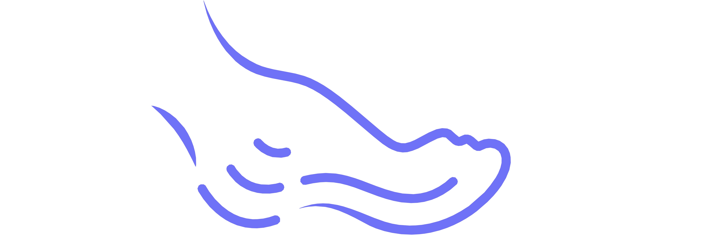

Mission

StrideAide is dedicated to pioneering innovative solutions aimed at preventing amputations in diabetic patients.
- Dynamically Self Offloading Insoles, developed in collaboration with the Indian Institute of Science (IISc) and Karnataka Institute of Endocrinology (KIER)
- Digital Podiatry Clinic (D-PoC) is a kiosk for early screening and detection of diabetic foot conditions, including neuropathy, vasculopathy and arthropathy.
- Foot Digital Twins can help diagnose, prognose, and predict foot health in a hypercustomizable manner.
In diabetic peripheral neuropathy, offloading high-plantar-pressure areas using statically offloaded customized insoles or expensive sensors and actuators are commonly-followed treatment procedures. We're bringing to you dynamically self-offloading therapeutic footwear that operates mechanically without using sensors and actuators.
This kiosk enables education and awareness, prevention, early diagnosis, remote consultations, foot and footwear assessment. It would also provide therapeutic footwear for the patients, based on the assessments.
Triaging patients at D-PoCs using AI-based data analytics and clinical decision support algorithms, to help create personalized FDTs (Foot Digital Twin) using physics-informed AI and a parameterized, high-fidelity, nonlinear mechanical model of the foot. We're also building a StrideAIde chatbot based on medical LLMs (large language models).